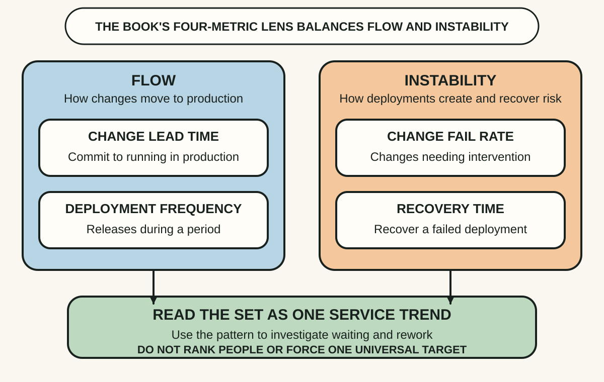
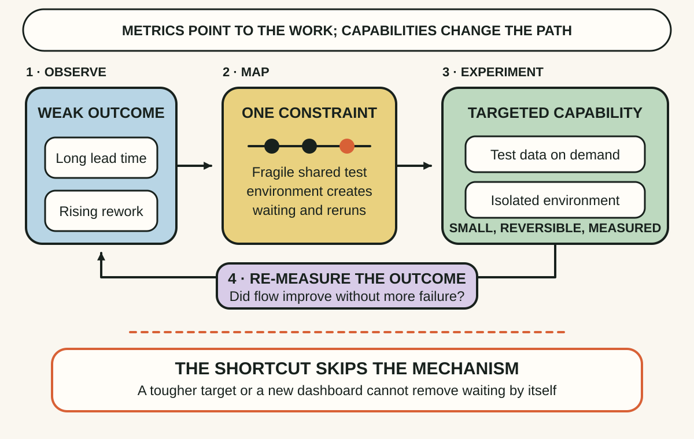
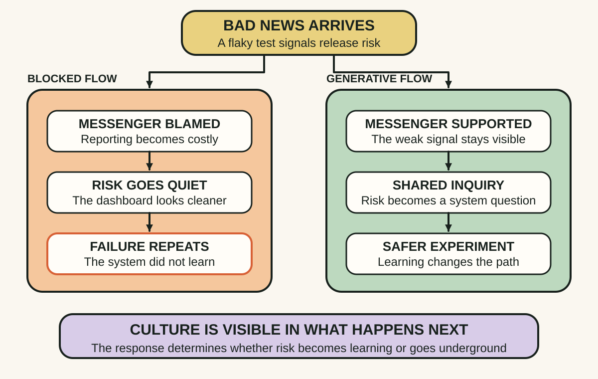

Daily lesson ·
Accelerate
Improve software delivery without turning measurement into theatre: read flow and instability together, change the capabilities behind the numbers and build a culture where bad news travels fast enough to help.
Idea 1
Measure flow and instability together #
The idea
Forsgren, Humble and Kim organise software-delivery performance around two kinds of outcome. Deployment frequency and lead time for changes describe throughput, while change failure percentage and time to restore service describe stability. Their research challenges the assumption that faster delivery must be bought with worse stability: stronger performers tended to do well across both dimensions.
These are system measures, not individual productivity scores. Their value comes from reading the set together for one application or service over time. A faster number can hide larger failures, while a safer-looking number can hide work trapped in queues. The tension makes a constraint visible without pretending one metric captures delivery performance.

Why it matters
Teams can make deployment counts rise by slicing work mechanically, or make failure rates fall by avoiding releases. A balanced view makes those local victories harder to mistake for a healthier path from change to production.
Apply it today
Choose one application or service. Write its current lead-time and deployment-frequency trend beside its failed-change and recovery trend, using rough ranges if exact data is costly.
Circle the pair that appears to be moving in the wrong direction together. Ask which wait, handoff or source of rework could plausibly influence both.
Caveat or failure mode
Metric definitions and the delivery landscape evolve. DORA's current practitioner guide uses five metrics, while its conservative Core model retains four. Context also differs by service, so do not copy benchmark bands blindly, combine unlike systems, turn the measures into quotas or use them to rank individuals.
Idea 2
Improve the capability, not the target #
The idea
The book separates performance outcomes from the technical and organisational capabilities that can improve them. Continuous delivery means keeping software deployable and being able to release changes on demand quickly, safely and sustainably. It is not the same as automatically deploying every commit.
That ability emerges from a system of practices: small batches, fast test feedback, version control, deployment automation, trunk-based development, database-change discipline, security, observability and architecture that lets teams test and release without heavy coordination. Installing a dashboard or demanding more deployments changes the measure before it changes this system.

Why it matters
Teams often buy orchestration, test or dashboard tools while preserving large batches, slow approvals and fragile environments. The new tool then automates only a fragment and the original delay survives.
Apply it today
Take the weakest paired delivery signal from Idea 1 and draw the actual path of one change from commit to production, including waiting and rework.
Mark the largest avoidable delay. Choose one bounded capability experiment, such as reliable test data on demand, a smaller batch or one automated deployment step, and state what trend should move if the hypothesis is right.
Caveat or failure mode
DORA's relationships are predictive and context-dependent, not proof that copying one practice causes the same gain everywhere. Transformations can initially reduce performance while skills, architecture and process catch up. Preserve safety, regulation and domain constraints, and measure the whole change rather than declaring a tool installation successful.
Idea 3
Culture decides whether bad news can travel #
The idea
Accelerate uses Ron Westrum's organisational-culture model to focus on information flow. In a generative culture, cooperation is high, messengers are trained rather than punished, risks are shared, bridging between groups is encouraged and failure leads to inquiry. The research found this kind of culture predictive of software-delivery and organisational performance.
Culture is therefore visible in what happens after someone reports a flaky test, security risk or failed change. If the messenger is blamed, information becomes slower and safer-looking dashboards conceal risk. If the signal triggers shared inquiry and a bounded improvement, the organisation learns before the same condition becomes a larger failure.

Why it matters
Delivery systems depend on people surfacing weak signals before metrics fully register them. Punishing inconvenience improves the appearance of control while increasing the chance that defects, security concerns and workarounds remain hidden.
Apply it today
Recall one recent piece of inconvenient delivery news. Write how long it took to reach someone able to act and what happened to the person who raised it.
Change one response for the next signal: thank the messenger, make the risk visible, assign shared inquiry and record one system-level learning rather than one person's fault.
Caveat or failure mode
A generative culture does not remove standards, accountability or difficult decisions, and psychological safety is not guaranteed by calling a review blameless. Local team behaviour is constrained by incentives, hierarchy and employment conditions. The DORA evidence is predictive and survey-based, so improve observable information practices and watch the result rather than claiming culture alone caused performance.
Knowledge check · 6 questions
Learning check
Answer all 6, then check your answers. Your first result stays in this browser, and each explanation appears after you check. A 3-question review can appear on the homepage from tomorrow.
6 questions not yet answered.
Today's experiment · 10 minutes
Run one balanced delivery diagnosis
- Choose one application or service and write rough trends for flow and instability, marking unknown data honestly.
- Trace one recent change from commit to production, including its longest wait and any rework or recovery path.
- Circle the strongest constraint and name one technical or process capability that could change it.
- Name the bad-news signal this experiment needs and how the messenger will be supported.
- Write one observable result to check next week without setting a quota or ranking a person.
Observable result: You finish with one balanced baseline, one constraint hypothesis, one capability experiment and one protected information path for learning.
Retrieval practice
Spaced recall
- From A Philosophy of Software Design: which complexity effect could be contributing to long delivery lead time, and what observation would distinguish it?
- From Site Reliability Engineering: which user-facing reliability signal should remain beside delivery speed so faster change is not mistaken for better service?
Verification
Source notes
These links support the attributed claims and edition details; applications and extensions are labelled in the lesson.
- IT Revolution: Accelerate publication details and official resources
- ACM Digital Library: A Valid and Reliable Measurement Model for Software Delivery Performance
- DORA: conservative Core model of capabilities, performance and outcomes
- DORA: current software-delivery performance metrics and safeguards
- DORA: continuous-delivery capability and implementation guidance
- DORA: generative organisational culture and information flow
- Google Cloud: 2021 DORA report methodology and limitations
One-sentence takeaway